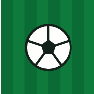
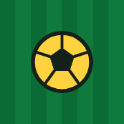
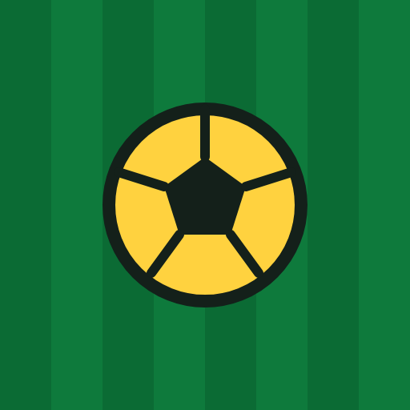

<<<<<<< HEAD
Ícone do app: proposta
Ícone do app: proposta
Derivado da direção A (faixas de gramado e bola amarela). Aguarda aprovação do usuário.
 SVG, fundo claro
SVG, fundo claro

192
 512
512

Apple 180Fundo escuro

Máscara circular (área segura 80%)
=======
Ícone do app: prévia para aprovação
Em fundo claro
192 × 192
512 × 512 (exibido a 192)
512 maskable (exibido a 192)
Apple touch 180 × 180
SVG (fonte)
Em fundo escuro
192 × 192
512 maskable
Apple touch 180
Máscara circular (área segura de 80%)
Círculo de 80% do lado
Tamanho de launcher (96)
48
>>>>>>> worktree-execucao+executar-TP-0006